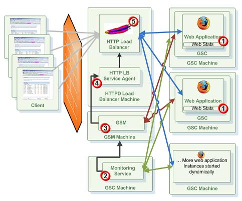

The integration dynamically creates and updates the mod_proxy_balancer configuration, based on the state of the deployed web applications. Once changes occur (relocation / failover / changes to the number of web application instances), the utility identifies the change, updates the balancer configuration, and sends a soft restart to Apache to take the new configuration into account.
General information on how to enable the mod_proxy load balancer and configuration can be found in the Jetty mod_proxy docs. Note, the load balancer actual configuration of specific balancer members are generated automatically as explained below.
Similar agents can be implemented for other HTTP load-balancers such as F5, Radware,CISCO ACE, Barracuda etc., using the Administration and Monitoring API. See the Web Load Balancer Agent PU for details.
Here is a description of the flow that eventually scales the web application dynamically:

The agent resides within
The agent uses two main configurations. The first is the directory where the load-balancer configuration files are created (there is one per web application). The second is the command the script executes in order to update Apache with the changes made to the load-balancer configuration files.
By default, the script assumes that Apache is installed under PROGRAM_FILES/Apache Software Foundation/Apache2.2 for Windows, and /opt/local/apache2 for Unix. The location of Apache can be controlled using the -apache command line parameter. Here is an example for executing the script with a custom Apache location:
Linux:
apache-lb-agent.sh -apache /opt/apache
Windows:
apache-lb-agent.bat -apache c:\Apache2.2
When using just the Apache location, the configuration files are created under [apache]/conf/gigaspaces. The command executed is [apache]/bin/apachectl graceful on Unix, and [apache]\bin\httpd.exe -k restart on Windows.
The specific location of the configuration directory where the load-balancer configuration files are created, can be passed using the -conf-dir command line parameter. For example:
Linux:
apache-lb-agent.sh -apache /opt/apache -conf-dir /var/apache/conf/gigaspaces
Windows:
apache-lb-agent.bat -apache c:\Apache2.2 -conf-dir c:\Apache2.2\conf\gigaspaces
The Apache configuration should be updated to include the load-balancer configuration directory, the relevant modules required and optionally to enable the load-balancer console. Here is an example of the configuration sections that should be added to Apache:
Include /opt/local/apache2/conf/gigaspaces/*.conf
LoadModule proxy_module modules/mod_proxy.so
LoadModule proxy_balancer_module modules/mod_proxy_balancer.so
LoadModule proxy_http_module modules/mod_proxy_http.so
LoadModule status_module modules/mod_status.so
ProxyPass /balancer !
<Location /balancer-manager>
SetHandler balancer-manager
Order deny,allow
Deny from all
Allow from 127.0.0.1
</Location>
| Command Line parameter | Description | Default Value |
|---|---|---|
| -apache location | The installation location of apache (apache root folder). |
windows/unix common locations |
| -conf-dir location | The directory where the load balancer config files will be created. | apache root folder/conf/gigaspaces |
| -update-interval value | The update interval command. The interval (in milliseconds) when the load balancer conf files will be updated). The agent updates the configuration files and sends the restart command periodically. All changes happening to the deployment are accumulated and then flushed. | 10000 (10 seconds) |
| -restart-command value | The full apache restart command. | windows: httpd -k restart unix: apachectl graceful |
| -apachectl location | Controls the The apachectl/httpd executable name and full path location. This overrides the -apache parameter. If this argument is not specified the agent looking for the apachectl(on unix) or httpd.exe(on windows) executable under apache root folder/bin/ folder. |
|
| -groups value | Lookup group name (or coma separated group names) to locate the lookup service via multicast discovery protocol. This option is relevant only when the load-balancer machine has multicast connectivity with the GSM machine. | The |
| -locators value | Host machine name(or coma separated host names) or IP(s) running the lookup service. | The |
The agent listens for changes happening in the web application deployment topology running within the Service Grid. If custom lookup groups or lookup locators are used, the agent scripts use the built-in options within the product to change them (for example, in setenv.(bat/sh)).
A load-balancer configuration is created for each web application deployed into the service grid. The template used to generate the load-balancer configuration can be found under org.openspaces.pu.container.jee.lb.apache.LoadBalancerInfo object, which holds all the information regarding the currently deployed web application instances locations.
Processing unit specific templates can be created by placing a processing unit name.vm file in the same location. Note, the processing unit name is the name of the processing unit which defaults to the war file name, but can be overridden using the override-name option.